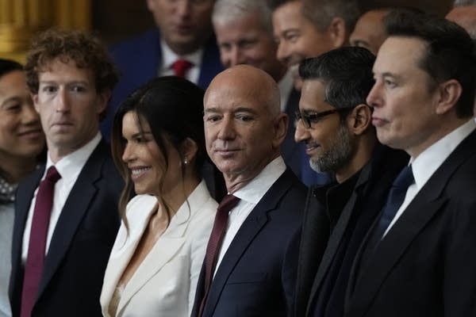
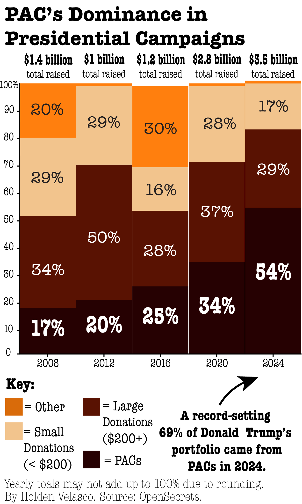
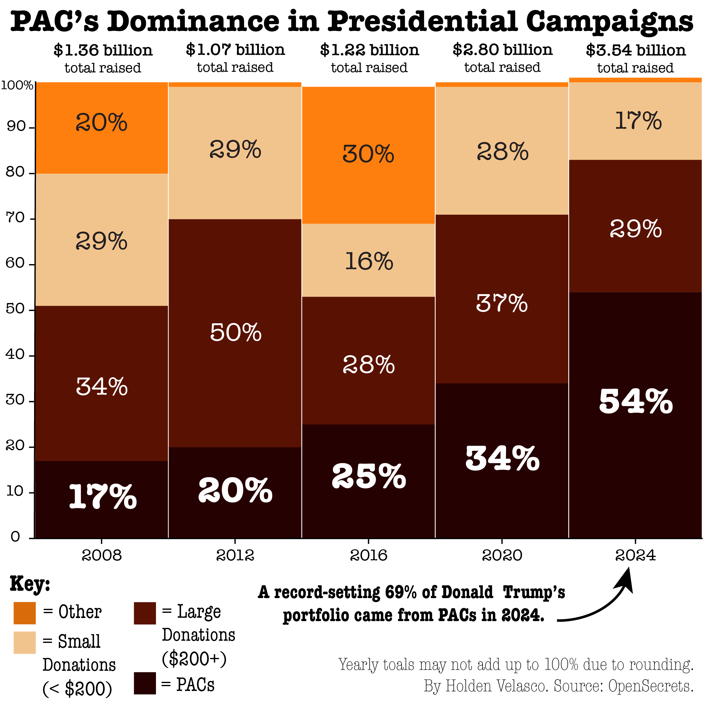
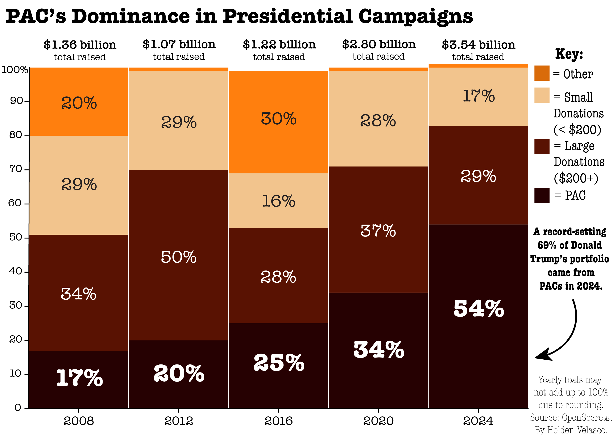

Tech billionares and affluent Donald Trump donors Mark Zuckerberg, Jeff Bezos, Sundar Pichai and Elon Musk — who combine for a net worth of $1.3 trillion — sit front row at President Trump's inauguration in 2025. Photograph: Julia Demaree Nikhinson/AP
With the 2026 midterms right around the corner, a major talking point across the country has been about election finances. Negative discourse surrounding politicians taking “dark money” from ultra-wealthy donors and corporations has exploded under President Donald Trump’s second term.
For good reason.
President Trump took over a billion dollars from political action committees (more commonly known as PACs) in the 2024 Election, which represented nearly 70% of his total campaign finances. There have been many recorded incidents of corporate donors who supported President Trump getting, seemingly, favors after he won the 2024 Election.
Most recently, the Department of Justice allowed Live Nation (Ticketmaster's parent company) to settle its monopoly case out of court after they were sued by the DOJ and 40 states under President Joe Biden in 2024. Live Nation contributed $500,000 to President Trump's inaguration fund in 2025 while the investigation into them was still active.



These PACs allow corporations, special interest groups and rich individuals to channel an unlimited amount of money to any political campaign they choose through the PACs. Both political parties accept PAC money, with Kamala Harris taking nearly $860 million in 2024 — the second highest mark ever.
The ruling of Citizens United (2010) reversed century-old campaign finance legislation that directly restricted corporations and unions from sending their money to political campaigns. Due to the 2010 ruling, individuals can now funnel money through non-profit PACs that no longer have a financial cap or the necessity to disclose their donors. In the 2024 Election, just 300 billionaire families accounted for 19% of all spending in elections.
The ruling, which said restricting corporations and special interest groups’ spending in campaigns violated their First Amendment right, has seen wide-spread opposition across the political spectrum.
Various PACs are already spending big on the 2026 Primaries ahead of the general election in November.